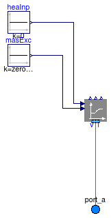
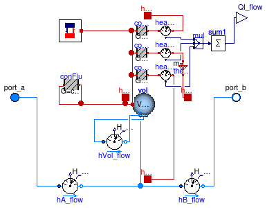
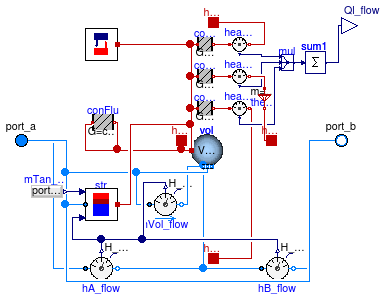
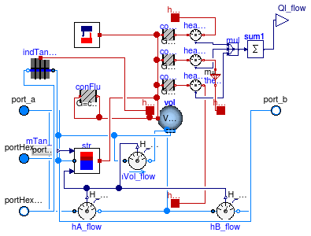

Package with thermal energy storage models
Information
This package contains thermal energy storage models.
Extends from Modelica.Icons.VariantsPackage (Icon for package containing variants).
Package Content
Expansion vessel with fixed pressure

Information
This is a model of a pressure expansion vessel. The vessel has a constant pressure
that is equal to the value of the parameter p_start.
The model takes into account the energy and mass balance of the medium.
It has no heat exchange with the ambient.
The expansion vessel needs to be used in closed loops that contain
water to set a reference pressure and, for liquids where the
density is modeled as a function of temperature, to allow for
the thermal expansion of the liquid.
Note that alternatively, the model
Buildings.Fluid.Sources.FixedBoundary may be used to set
a reference pressure. The main difference between these two models
is that in this model, there is an energy and mass balance for the volume.
In contrast, for
Buildings.Fluid.Sources.FixedBoundary,
any mass flow rate that flows out of the model will be at a user-specified temperature.
Therefore,
Buildings.Fluid.Sources.FixedBoundary leads to smaller systems
of equations, which may result in faster simulation.
Extends from Buildings.Fluid.Interfaces.LumpedVolumeDeclarations (Declarations for lumped volumes).
Parameters
| Type | Name | Default | Description |
|---|
| replaceable package Medium | PartialMedium | Medium in the component |
| Volume | V_start | | Volume of liquid stored in the vessel at the start of the simulation [m3] |
| Pressure | p | Medium.p_default | Constant pressure of the expansion vessel [Pa] |
| Dynamics |
| Equations |
| Dynamics | energyDynamics | Modelica.Fluid.Types.Dynamic... | Formulation of energy balance |
| Dynamics | massDynamics | Modelica.Fluid.Types.Dynamic... | Formulation of mass balance |
| Real | mSenFac | 1 | Factor for scaling the sensible thermal mass of the volume |
| Initialization |
| AbsolutePressure | p_start | Medium.p_default | Start value of pressure [Pa] |
| Temperature | T_start | Medium.T_default | Start value of temperature [K] |
| MassFraction | X_start[Medium.nX] | Medium.X_default | Start value of mass fractions m_i/m [kg/kg] |
| ExtraProperty | C_start[Medium.nC] | fill(0, Medium.nC) | Start value of trace substances |
| ExtraProperty | C_nominal[Medium.nC] | fill(1E-2, Medium.nC) | Nominal value of trace substances. (Set to typical order of magnitude.) |
Connectors
Modelica definition
model ExpansionVessel
"Expansion vessel with fixed pressure"
extends Buildings.Fluid.Interfaces.LumpedVolumeDeclarations(
final energyDynamics=Modelica.Fluid.Types.Dynamics.FixedInitial,
final massDynamics=Modelica.Fluid.Types.Dynamics.FixedInitial,
final mSenFac=1);
parameter Modelica.SIunits.Volume V_start(start=1)
"Volume of liquid stored in the vessel at the start of the simulation";
parameter Modelica.SIunits.Pressure p = Medium.p_default
"Constant pressure of the expansion vessel";
Modelica.Fluid.Interfaces.FluidPort_a port_a(
redeclare package Medium =
Medium)
"Fluid port";
Modelica.SIunits.Mass m
"Mass of liquid in the vessel";
protected
final parameter Medium.ThermodynamicState state_start =
Medium.setState_pTX(
T=T_start,
p=p_start,
X=X_start[1:Medium.nXi])
"Medium state at start values";
final parameter Modelica.SIunits.Density rho_start=
Medium.density(
state=state_start)
"Density, used to compute start and guess values";
Modelica.SIunits.Energy H
"Internal energy of fluid";
Modelica.SIunits.Mass[Medium.nXi] mXi
"Masses of independent components in the fluid";
Modelica.SIunits.Mass[Medium.nC] mC
"Masses of trace substances in the fluid";
Medium.ExtraProperty C[Medium.nC](nominal=C_nominal)
"Trace substance mixture content";
initial equation
m = V_start * rho_start;
H = m*
Medium.specificInternalEnergy(
Medium.setState_pTX(p=p_start, T=T_start, X= X_start[1:Medium.nXi]));
mXi = m*X_start[1:Medium.nXi];
mC = m*C_start[1:Medium.nC];
equation
assert(m > 1.0E-8,
"Expansion vessel is undersized. You need to increase the value of the parameter V_start.");
// Conservation equations
der(m) = port_a.m_flow;
der(H) = port_a.m_flow *
actualStream(port_a.h_outflow);
der(mXi) = port_a.m_flow *
actualStream(port_a.Xi_outflow);
der(mC) = port_a.m_flow *
actualStream(port_a.C_outflow);
// Properties of outgoing flow.
// The port pressure is set to a constant value.
port_a.p = p_start;
m*port_a.h_outflow = H;
m*port_a.Xi_outflow = mXi;
m*port_a.C_outflow = mC;
end ExpansionVessel;
Model of a stratified tank for thermal energy storage

Information
This is a model of a stratified storage tank.
See the
Buildings.Fluid.Storage.UsersGuide
for more information.
For a model with enhanced stratification, use
Buildings.Fluid.Storage.StratifiedEnhanced.
Extends from Buildings.Fluid.Interfaces.PartialTwoPortInterface (Partial model transporting fluid between two ports without storing mass or energy).
Parameters
| Type | Name | Default | Description |
|---|
| replaceable package Medium | PartialMedium | Medium in the component |
| Volume | VTan | | Tank volume [m3] |
| Length | hTan | | Height of tank (without insulation) [m] |
| Length | dIns | | Thickness of insulation [m] |
| ThermalConductivity | kIns | 0.04 | Specific heat conductivity of insulation [W/(m.K)] |
| Integer | nSeg | 2 | Number of volume segments |
| Time | tau | 1 | Time constant for mixing [s] |
| Nominal condition |
| MassFlowRate | m_flow_nominal | | Nominal mass flow rate [kg/s] |
| Initialization |
| MassFlowRate | m_flow.start | 0 | Mass flow rate from port_a to port_b (m_flow > 0 is design flow direction) [kg/s] |
| Pressure | dp.start | 0 | Pressure difference between port_a and port_b [Pa] |
| Assumptions |
| Boolean | allowFlowReversal | true | = true to allow flow reversal, false restricts to design direction (port_a -> port_b) |
| Advanced |
| MassFlowRate | m_flow_small | 1E-4*abs(m_flow_nominal) | Small mass flow rate for regularization of zero flow [kg/s] |
| Diagnostics |
| Boolean | show_T | false | = true, if actual temperature at port is computed |
| Dynamics |
| Equations |
| Dynamics | energyDynamics | Modelica.Fluid.Types.Dynamic... | Formulation of energy balance |
| Dynamics | massDynamics | energyDynamics | Formulation of mass balance |
| Initialization |
| AbsolutePressure | p_start | Medium.p_default | Start value of pressure [Pa] |
| Temperature | T_start | Medium.T_default | Start value of temperature [K] |
| MassFraction | X_start[Medium.nX] | Medium.X_default | Start value of mass fractions m_i/m [kg/kg] |
| ExtraProperty | C_start[Medium.nC] | fill(0, Medium.nC) | Start value of trace substances |
Connectors
| Type | Name | Description |
|---|
| FluidPort_a | port_a | Fluid connector a (positive design flow direction is from port_a to port_b) |
| FluidPort_b | port_b | Fluid connector b (positive design flow direction is from port_a to port_b) |
| replaceable package Medium | |
| output RealOutput | Ql_flow | Heat loss of tank (positive if heat flows from tank to ambient) |
| HeatPort_a | heaPorVol[nSeg] | Heat port of fluid volumes |
| HeatPort_a | heaPorSid | Heat port tank side (outside insulation) |
| HeatPort_a | heaPorTop | Heat port tank top (outside insulation) |
| HeatPort_a | heaPorBot | Heat port tank bottom (outside insulation). Leave unconnected for adiabatic condition |
Modelica definition
model Stratified
"Model of a stratified tank for thermal energy storage"
extends Buildings.Fluid.Interfaces.PartialTwoPortInterface(
showDesignFlowDirection=false);
replaceable package Medium =
Modelica.Media.Interfaces.PartialSimpleMedium;
import Modelica.Fluid.Types;
import Modelica.Fluid.Types.Dynamics;
parameter Modelica.SIunits.Volume VTan
"Tank volume";
parameter Modelica.SIunits.Length hTan
"Height of tank (without insulation)";
parameter Modelica.SIunits.Length dIns
"Thickness of insulation";
parameter Modelica.SIunits.ThermalConductivity kIns = 0.04
"Specific heat conductivity of insulation";
parameter Integer nSeg(min=2) = 2
"Number of volume segments";
////////////////////////////////////////////////////////////////////
// Assumptions
parameter Types.Dynamics energyDynamics=Modelica.Fluid.Types.Dynamics.FixedInitial
"Formulation of energy balance";
parameter Types.Dynamics massDynamics=energyDynamics
"Formulation of mass balance";
// Initialization
parameter Medium.AbsolutePressure p_start = Medium.p_default
"Start value of pressure";
parameter Medium.Temperature T_start=Medium.T_default
"Start value of temperature";
parameter Medium.MassFraction X_start[Medium.nX] = Medium.X_default
"Start value of mass fractions m_i/m";
parameter Medium.ExtraProperty C_start[Medium.nC](
quantity=Medium.extraPropertiesNames)=
fill(0, Medium.nC)
"Start value of trace substances";
// Dynamics
parameter Modelica.SIunits.Time tau=1
"Time constant for mixing";
////////////////////////////////////////////////////////////////////
// Connectors
Modelica.Blocks.Interfaces.RealOutput Ql_flow
"Heat loss of tank (positive if heat flows from tank to ambient)";
Modelica.Thermal.HeatTransfer.Interfaces.HeatPort_a[nSeg] heaPorVol
"Heat port of fluid volumes";
Modelica.Thermal.HeatTransfer.Interfaces.HeatPort_a heaPorSid
"Heat port tank side (outside insulation)";
Modelica.Thermal.HeatTransfer.Interfaces.HeatPort_a heaPorTop
"Heat port tank top (outside insulation)";
Modelica.Thermal.HeatTransfer.Interfaces.HeatPort_a heaPorBot
"Heat port tank bottom (outside insulation). Leave unconnected for adiabatic condition";
// Models
MixingVolumes.MixingVolume[nSeg] vol(
redeclare each package Medium =
Medium,
each energyDynamics=energyDynamics,
each massDynamics=massDynamics,
each p_start=p_start,
each T_start=T_start,
each X_start=X_start,
each C_start=C_start,
each V=VTan/nSeg,
each nPorts=nPorts,
each m_flow_nominal = m_flow_nominal,
each final mSenFac=1,
each final m_flow_small=m_flow_small,
each final allowFlowReversal=allowFlowReversal)
"Tank segment";
protected
constant Integer nPorts = 2
"Number of ports of volume";
parameter Medium.ThermodynamicState sta_default =
Medium.setState_pTX(
T=Medium.T_default,
p=Medium.p_default,
X=Medium.X_default[1:Medium.nXi])
"Medium state at default properties";
parameter Modelica.SIunits.Length hSeg = hTan / nSeg
"Height of a tank segment";
parameter Modelica.SIunits.Area ATan = VTan/hTan
"Tank cross-sectional area (without insulation)";
parameter Modelica.SIunits.Length rTan =
sqrt(ATan/Modelica.Constants.pi)
"Tank diameter (without insulation)";
parameter Modelica.SIunits.ThermalConductance conFluSeg = ATan*
Medium.thermalConductivity(sta_default)/hSeg
"Thermal conductance between fluid volumes";
parameter Modelica.SIunits.ThermalConductance conTopSeg = ATan*kIns/dIns
"Thermal conductance from center of top (or bottom) volume through tank insulation at top (or bottom)";
Sensors.EnthalpyFlowRate H_a_flow(
redeclare package Medium =
Medium,
final m_flow_nominal=m_flow_nominal,
final tau=0,
final allowFlowReversal=allowFlowReversal,
final m_flow_small=m_flow_small)
"Enthalpy flow rate at port a";
Sensors.EnthalpyFlowRate[nSeg - 1] H_vol_flow(
redeclare package Medium =
Medium,
each final m_flow_nominal=m_flow_nominal,
each final tau=0,
each final allowFlowReversal=allowFlowReversal,
each final m_flow_small=m_flow_small)
"Enthalpy flow rate between the volumes";
Sensors.EnthalpyFlowRate H_b_flow(
redeclare package Medium =
Medium,
final m_flow_nominal=m_flow_nominal,
final tau=0,
final allowFlowReversal=allowFlowReversal,
final m_flow_small=m_flow_small)
"Enthalpy flow rate at port b";
BaseClasses.Buoyancy buo(
redeclare final package Medium =
Medium,
final V=VTan,
final nSeg=nSeg,
final tau=tau)
"Model to prevent unstable tank stratification";
Modelica.Thermal.HeatTransfer.Components.ThermalConductor[nSeg - 1] conFlu(
each G=conFluSeg)
"Thermal conductance in fluid between the segments";
Modelica.Thermal.HeatTransfer.Components.ThermalConductor[nSeg] conWal(
each G=2*Modelica.Constants.pi*kIns*hSeg/
Modelica.Math.log((rTan+dIns)/rTan))
"Thermal conductance through tank wall";
Modelica.Thermal.HeatTransfer.Components.ThermalConductor conTop(
G=conTopSeg)
"Thermal conductance through tank top";
Modelica.Thermal.HeatTransfer.Components.ThermalConductor conBot(
G=conTopSeg)
"Thermal conductance through tank bottom";
Modelica.Thermal.HeatTransfer.Sensors.HeatFlowSensor heaFloTop
"Heat flow at top of tank (outside insulation)";
Modelica.Thermal.HeatTransfer.Sensors.HeatFlowSensor heaFloBot
"Heat flow at bottom of tank (outside insulation)";
Modelica.Thermal.HeatTransfer.Sensors.HeatFlowSensor heaFloSid[nSeg]
"Heat flow at wall of tank (outside insulation)";
Modelica.Blocks.Routing.Multiplex3 mul(
n1=1,
n2=nSeg,
n3=1)
"Multiplex to collect heat flow rates";
Modelica.Blocks.Math.Sum sum1(nin=nSeg + 2);
Modelica.Thermal.HeatTransfer.Components.ThermalCollector theCol(m=nSeg)
"Connector to assign multiple heat ports to one heat port";
equation
connect(H_a_flow.port_b, vol[1].ports[1]);
connect(vol[nSeg].ports[2], H_b_flow.port_a);
connect(H_b_flow.port_b, port_b);
for i
in 1:(nSeg-1)
loop
connect(vol[i].ports[2], H_vol_flow[i].port_a);
connect(H_vol_flow[i].port_b, vol[i + 1].ports[1]);
end for;
connect(port_a, H_a_flow.port_a);
connect(buo.heatPort, vol.heatPort);
for i
in 1:nSeg-1
loop
// heat conduction between fluid nodes
connect(vol[i].heatPort, conFlu[i].port_a);
connect(vol[i+1].heatPort, conFlu[i].port_b);
end for;
connect(vol[1].heatPort, conTop.port_a);
connect(vol.heatPort, conWal.port_a);
connect(conBot.port_a, vol[nSeg].heatPort);
connect(vol.heatPort, heaPorVol);
connect(conWal.port_b, heaFloSid.port_a);
connect(conTop.port_b, heaFloTop.port_a);
connect(conBot.port_b, heaFloBot.port_a);
connect(heaFloTop.port_b, heaPorTop);
connect(heaFloBot.port_b, heaPorBot);
connect(heaFloTop.Q_flow, mul.u1[1]);
connect(heaFloSid.Q_flow, mul.u2);
connect(heaFloBot.Q_flow, mul.u3[1]);
connect(mul.y, sum1.u);
connect(sum1.y, Ql_flow);
connect(heaFloSid.port_b, theCol.port_a);
connect(theCol.port_b, heaPorSid);
end Stratified;
Stratified tank model with enhanced discretization

Information
This is a model of a stratified storage tank for thermal energy storage.
See the
Buildings.Fluid.Storage.UsersGuide
for more information.
Limitations
The model requires at least 4 fluid segments. Hence, set nSeg to 4 or higher.
Extends from Stratified (Model of a stratified tank for thermal energy storage).
Parameters
| Type | Name | Default | Description |
|---|
| replaceable package Medium | PartialMedium | Medium in the component |
| Volume | VTan | | Tank volume [m3] |
| Length | hTan | | Height of tank (without insulation) [m] |
| Length | dIns | | Thickness of insulation [m] |
| ThermalConductivity | kIns | 0.04 | Specific heat conductivity of insulation [W/(m.K)] |
| Integer | nSeg | 4 | Number of volume segments |
| Time | tau | 1 | Time constant for mixing [s] |
| Nominal condition |
| MassFlowRate | m_flow_nominal | | Nominal mass flow rate [kg/s] |
| Initialization |
| MassFlowRate | m_flow.start | 0 | Mass flow rate from port_a to port_b (m_flow > 0 is design flow direction) [kg/s] |
| Pressure | dp.start | 0 | Pressure difference between port_a and port_b [Pa] |
| Assumptions |
| Boolean | allowFlowReversal | true | = true to allow flow reversal, false restricts to design direction (port_a -> port_b) |
| Advanced |
| MassFlowRate | m_flow_small | 1E-4*abs(m_flow_nominal) | Small mass flow rate for regularization of zero flow [kg/s] |
| Diagnostics |
| Boolean | show_T | false | = true, if actual temperature at port is computed |
| Dynamics |
| Equations |
| Dynamics | energyDynamics | Modelica.Fluid.Types.Dynamic... | Formulation of energy balance |
| Dynamics | massDynamics | energyDynamics | Formulation of mass balance |
| Initialization |
| AbsolutePressure | p_start | Medium.p_default | Start value of pressure [Pa] |
| Temperature | T_start | Medium.T_default | Start value of temperature [K] |
| MassFraction | X_start[Medium.nX] | Medium.X_default | Start value of mass fractions m_i/m [kg/kg] |
| ExtraProperty | C_start[Medium.nC] | fill(0, Medium.nC) | Start value of trace substances |
Connectors
| Type | Name | Description |
|---|
| FluidPort_a | port_a | Fluid connector a (positive design flow direction is from port_a to port_b) |
| FluidPort_b | port_b | Fluid connector b (positive design flow direction is from port_a to port_b) |
| output RealOutput | Ql_flow | Heat loss of tank (positive if heat flows from tank to ambient) |
| HeatPort_a | heaPorVol[nSeg] | Heat port of fluid volumes |
| HeatPort_a | heaPorSid | Heat port tank side (outside insulation) |
| HeatPort_a | heaPorTop | Heat port tank top (outside insulation) |
| HeatPort_a | heaPorBot | Heat port tank bottom (outside insulation). Leave unconnected for adiabatic condition |
Modelica definition
model StratifiedEnhanced
"Stratified tank model with enhanced discretization"
extends Stratified(nSeg=4, nPorts=3, vol(
each prescribedHeatFlowRate=true));
protected
BaseClasses.ThirdOrderStratifier str(
redeclare package Medium =
Medium,
nSeg=nSeg,
m_flow_small=m_flow_small)
"Model to reduce numerical dissipation";
Modelica.Blocks.Sources.RealExpression mTan_flow(y=port_a.m_flow)
"Mass flow rate at port a";
equation
connect(vol[1:nSeg].ports[3], str.fluidPort[2:nSeg+1]);
connect(H_a_flow.H_flow, str.H_flow[1]);
connect(H_vol_flow[1:nSeg-1].H_flow, str.H_flow[2:nSeg]);
connect(H_b_flow.H_flow, str.H_flow[nSeg + 1]);
connect(str.heatPort, vol.heatPort);
connect(port_a, str.fluidPort[1]);
connect(port_b, str.fluidPort[nSeg + 2]);
connect(mTan_flow.y, str.m_flow);
end StratifiedEnhanced;
A model of a water storage tank with a secondary loop and intenral heat exchanger

Information
This is a model of a stratified storage tank for thermal energy storage with built-in heat exchanger.
See the
Buildings.Fluid.Storage.UsersGuide
for more information.
Limitations
The model requires at least 4 fluid segments. Hence, set nSeg to 4 or higher.
Extends from StratifiedEnhanced (Stratified tank model with enhanced discretization).
Parameters
| Type | Name | Default | Description |
|---|
| replaceable package Medium | PartialMedium | Medium in the component |
| Volume | VTan | | Tank volume [m3] |
| Length | hTan | | Height of tank (without insulation) [m] |
| Length | dIns | | Thickness of insulation [m] |
| ThermalConductivity | kIns | 0.04 | Specific heat conductivity of insulation [W/(m.K)] |
| Integer | nSeg | 4 | Number of volume segments |
| Time | tau | 1 | Time constant for mixing [s] |
| Nominal condition |
| MassFlowRate | m_flow_nominal | | Nominal mass flow rate [kg/s] |
| Initialization |
| MassFlowRate | m_flow.start | 0 | Mass flow rate from port_a to port_b (m_flow > 0 is design flow direction) [kg/s] |
| Pressure | dp.start | 0 | Pressure difference between port_a and port_b [Pa] |
| Heat exchanger |
| replaceable package MediumHex | Modelica.Media.Interfaces.Pa... | Medium in the heat exchanger |
| Height | hHex_a | | Height of portHex_a of the heat exchanger, measured from tank bottom [m] |
| Height | hHex_b | | Height of portHex_b of the heat exchanger, measured from tank bottom [m] |
| Integer | hexSegMult | 2 | Number of heat exchanger segments in each tank segment |
| Diameter | dExtHex | 0.025 | Exterior diameter of the heat exchanger pipe [m] |
| HeatFlowRate | Q_flow_nominal | | Heat transfer at nominal conditions [W] |
| Temperature | TTan_nominal | | Temperature of fluid inside the tank at nominal heat transfer conditions [K] |
| Temperature | THex_nominal | | Temperature of fluid inside the heat exchanger at nominal heat transfer conditions [K] |
| Real | r_nominal | 0.5 | Ratio between coil inside and outside convective heat transfer at nominal heat transfer conditions |
| MassFlowRate | mHex_flow_nominal | | Nominal mass flow rate through the heat exchanger [kg/s] |
| Pressure | dpHex_nominal | 2500 | Pressure drop across the heat exchanger at nominal conditions [Pa] |
| Assumptions |
| Boolean | allowFlowReversal | true | = true to allow flow reversal, false restricts to design direction (port_a -> port_b) |
| Heat exchanger |
| Boolean | allowFlowReversalHex | true | = true to allow flow reversal in heat exchanger, false restricts to design direction (portHex_a -> portHex_b) |
| Advanced |
| MassFlowRate | m_flow_small | 1E-4*abs(m_flow_nominal) | Small mass flow rate for regularization of zero flow [kg/s] |
| Diagnostics |
| Boolean | show_T | false | = true, if actual temperature at port is computed |
| Dynamics |
| Equations |
| Dynamics | energyDynamics | Modelica.Fluid.Types.Dynamic... | Formulation of energy balance |
| Dynamics | massDynamics | energyDynamics | Formulation of mass balance |
| Initialization |
| AbsolutePressure | p_start | Medium.p_default | Start value of pressure [Pa] |
| Temperature | T_start | Medium.T_default | Start value of temperature [K] |
| MassFraction | X_start[Medium.nX] | Medium.X_default | Start value of mass fractions m_i/m [kg/kg] |
| ExtraProperty | C_start[Medium.nC] | fill(0, Medium.nC) | Start value of trace substances |
| Flow resistance heat exchanger |
| Boolean | computeFlowResistance | true | =true, compute flow resistance. Set to false to assume no friction |
| Boolean | from_dp | false | = true, use m_flow = f(dp) else dp = f(m_flow) |
| Boolean | linearizeFlowResistance | false | = true, use linear relation between m_flow and dp for any flow rate |
| Real | deltaM | 0.1 | Fraction of nominal flow rate where flow transitions to laminar |
| Dynamics heat exchanger |
| Equations |
| Dynamics | energyDynamicsHex | Modelica.Fluid.Types.Dynamic... | Formulation of energy balance |
| Dynamics | massDynamicsHex | energyDynamicsHex | Formulation of mass balance |
| Length | lHex | rTan*abs(segHex_a - segHex_b... | Approximate length of the heat exchanger [m] |
| Area | ACroHex | (dExtHex^2 - (0.8*dExtHex)^2... | Cross sectional area of the heat exchanger [m2] |
| SpecificHeatCapacity | cHex | 490 | Specific heat capacity of the heat exchanger material [J/(kg.K)] |
| Density | dHex | 8000 | Density of the heat exchanger material [kg/m3] |
| HeatCapacity | CHex | ACroHex*lHex*dHex*cHex | Capacitance of the heat exchanger without the fluid [J/K] |
Connectors
| Type | Name | Description |
|---|
| FluidPort_a | port_a | Fluid connector a (positive design flow direction is from port_a to port_b) |
| FluidPort_b | port_b | Fluid connector b (positive design flow direction is from port_a to port_b) |
| output RealOutput | Ql_flow | Heat loss of tank (positive if heat flows from tank to ambient) |
| HeatPort_a | heaPorVol[nSeg] | Heat port of fluid volumes |
| HeatPort_a | heaPorSid | Heat port tank side (outside insulation) |
| HeatPort_a | heaPorTop | Heat port tank top (outside insulation) |
| HeatPort_a | heaPorBot | Heat port tank bottom (outside insulation). Leave unconnected for adiabatic condition |
| FluidPort_a | portHex_a | Heat exchanger inlet |
| FluidPort_b | portHex_b | Heat exchanger outlet |
| Heat exchanger |
| replaceable package MediumHex | Medium in the heat exchanger |
Modelica definition
model StratifiedEnhancedInternalHex
"A model of a water storage tank with a secondary loop and intenral heat exchanger"
extends StratifiedEnhanced;
replaceable package MediumHex =
Modelica.Media.Interfaces.PartialMedium "Medium in the heat exchanger";
parameter Modelica.SIunits.Height hHex_a
"Height of portHex_a of the heat exchanger, measured from tank bottom";
parameter Modelica.SIunits.Height hHex_b
"Height of portHex_b of the heat exchanger, measured from tank bottom";
parameter Integer hexSegMult(min=1) = 2
"Number of heat exchanger segments in each tank segment";
parameter Modelica.SIunits.Diameter dExtHex = 0.025
"Exterior diameter of the heat exchanger pipe";
parameter Modelica.SIunits.HeatFlowRate Q_flow_nominal
"Heat transfer at nominal conditions";
parameter Modelica.SIunits.Temperature TTan_nominal
"Temperature of fluid inside the tank at nominal heat transfer conditions";
parameter Modelica.SIunits.Temperature THex_nominal
"Temperature of fluid inside the heat exchanger at nominal heat transfer conditions";
parameter Real r_nominal(min=0, max=1)=0.5
"Ratio between coil inside and outside convective heat transfer at nominal heat transfer conditions";
parameter Modelica.SIunits.MassFlowRate mHex_flow_nominal
"Nominal mass flow rate through the heat exchanger";
parameter Modelica.SIunits.Pressure dpHex_nominal(displayUnit="Pa") = 2500
"Pressure drop across the heat exchanger at nominal conditions";
parameter Boolean computeFlowResistance=true
"=true, compute flow resistance. Set to false to assume no friction";
parameter Boolean from_dp=false
"= true, use m_flow = f(dp) else dp = f(m_flow)";
parameter Boolean linearizeFlowResistance=false
"= true, use linear relation between m_flow and dp for any flow rate";
parameter Real deltaM=0.1
"Fraction of nominal flow rate where flow transitions to laminar";
parameter Modelica.Fluid.Types.Dynamics energyDynamicsHex=
Modelica.Fluid.Types.Dynamics.DynamicFreeInitial
"Formulation of energy balance";
parameter Modelica.Fluid.Types.Dynamics massDynamicsHex=
energyDynamicsHex
"Formulation of mass balance";
parameter Modelica.SIunits.Length lHex=
rTan*
abs(segHex_a-segHex_b)*Modelica.Constants.pi
"Approximate length of the heat exchanger";
parameter Modelica.SIunits.Area ACroHex=
(dExtHex^2-(0.8*dExtHex)^2)*Modelica.Constants.pi/4
"Cross sectional area of the heat exchanger";
parameter Modelica.SIunits.SpecificHeatCapacity cHex=490
"Specific heat capacity of the heat exchanger material";
parameter Modelica.SIunits.Density dHex=8000
"Density of the heat exchanger material";
parameter Modelica.SIunits.HeatCapacity CHex=
ACroHex*lHex*dHex*cHex
"Capacitance of the heat exchanger without the fluid";
parameter Boolean allowFlowReversalHex = true
"= true to allow flow reversal in heat exchanger, false restricts to design direction (portHex_a -> portHex_b)";
Modelica.Fluid.Interfaces.FluidPort_a portHex_a(
redeclare final package Medium =
MediumHex,
m_flow(min=
if allowFlowReversalHex
then -Modelica.Constants.inf
else 0))
"Heat exchanger inlet";
Modelica.Fluid.Interfaces.FluidPort_b portHex_b(
redeclare final package Medium =
MediumHex,
m_flow(max=
if allowFlowReversalHex
then Modelica.Constants.inf
else 0))
"Heat exchanger outlet";
BaseClasses.IndirectTankHeatExchanger indTanHex(
final nSeg=nSegHex,
final CHex=CHex,
final volHexFlu=volHexFlu,
final Q_flow_nominal=Q_flow_nominal,
final TTan_nominal=TTan_nominal,
final THex_nominal=THex_nominal,
final r_nominal=r_nominal,
final dExtHex=dExtHex,
redeclare final package MediumTan =
Medium,
redeclare final package MediumHex =
MediumHex,
final dp_nominal=dpHex_nominal,
final m_flow_nominal=mHex_flow_nominal,
final energyDynamics=energyDynamicsHex,
final massDynamics=massDynamicsHex,
final computeFlowResistance=computeFlowResistance,
from_dp=from_dp,
final linearizeFlowResistance=linearizeFlowResistance,
final deltaM=deltaM,
final allowFlowReversal=allowFlowReversalHex,
final m_flow_small=1e-4*
abs(mHex_flow_nominal))
"Heat exchanger inside the tank";
protected
final parameter Integer segHex_a = nSeg-
integer(hHex_a/segHeight)
"Tank segment in which port a1 of the heat exchanger is located in";
final parameter Integer segHex_b = nSeg-
integer(hHex_b/segHeight)
"Tank segment in which port b1 of the heat exchanger is located in";
final parameter Modelica.SIunits.Height segHeight = hTan/nSeg
"Height of each tank segment (relative to bottom of same segment)";
final parameter Modelica.SIunits.Length dHHex =
abs(hHex_a-hHex_b)
"Vertical distance between the heat exchanger inlet and outlet";
final parameter Modelica.SIunits.Volume volHexFlu=
Modelica.Constants.pi * (0.8*dExtHex)^2/4 *lHex
"Volume of the heat exchanger";
final parameter Integer nSegHexTan=
if segHex_a > segHex_b
then segHex_a-segHex_b + 1
else segHex_b-segHex_a + 1
"Number of tank segments the heat exchanger resides in";
final parameter Integer nSegHex = nSegHexTan*hexSegMult
"Number of heat exchanger segments";
initial equation
assert(hHex_a >= 0
and hHex_a <= hTan,
"The parameter hHex_a is outside its valid range.");
assert(hHex_b >= 0
and hHex_b <= hTan,
"The parameter hHex_b is outside its valid range.");
assert(dHHex > 0,
"The parameters hHex_a and hHex_b must not be equal.");
equation
for j
in 1:nSegHexTan
loop
for i
in 1:hexSegMult
loop
connect(indTanHex.port[(j-1)*hexSegMult+i], heaPorVol[segHex_a+j-1]);
end for;
end for;
connect(portHex_a, indTanHex.port_a);
connect(indTanHex.port_b, portHex_b);
end StratifiedEnhancedInternalHex;
Automatically generated Mon Jul 13 14:26:10 2015.